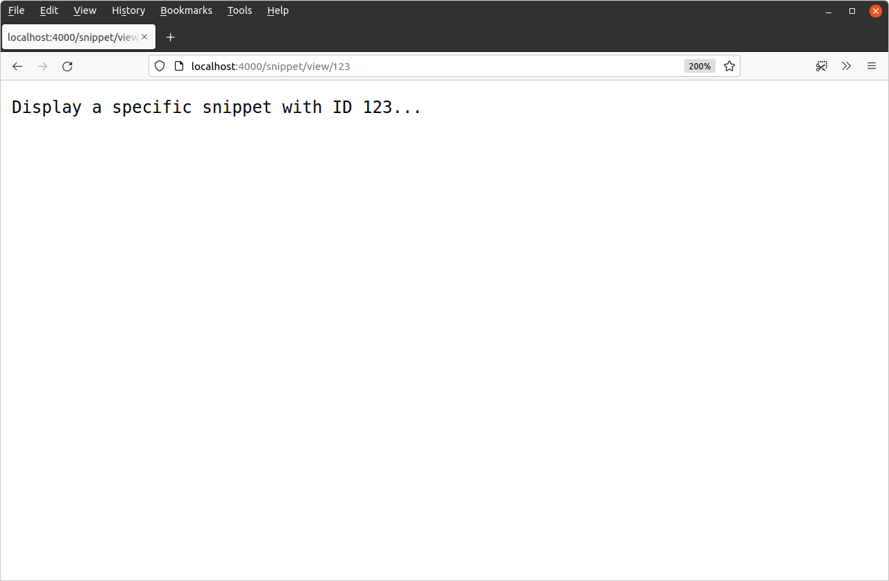

الگوهای مسیریابی wildcard
همچنین میتوانید الگوهای مسیریابی را تعریف کنید که شامل بخشهای wildcard هستند. میتوانید از اینها برای ایجاد قوانین مسیریابی انعطافپذیرتر استفاده کنید و همچنین متغیرها را از طریق URL درخواست به برنامه Go خود منتقل کنید. اگر قبلاً برنامههای وب را با استفاده از فریمورکها در زبانهای دیگر ساختهاید، مفاهیم این فصل احتمالاً برای شما آشنا خواهد بود.
بیایید برای لحظهای از ساخت برنامه خود فاصله بگیریم تا توضیح دهیم چگونه کار میکند.
بخشهای wildcard در یک الگوی مسیریابی با یک شناسه ویژه داخل براکتهای {} مشخص میشوند. مانند این:
mux.HandleFunc("/products/{category}/item/{itemID}", exampleHandler)
در این مثال، الگوی مسیریابی شامل دو بخش wildcard است. بخش اول دارای شناسه category و بخش دوم دارای شناسه itemID است.
قوانین تطبیق برای الگوهای مسیریابی حاوی بخشهای wildcard همانهایی هستند که در فصل قبل دیدیم، با این قانون اضافی که مسیر درخواست میتواند شامل هر مقدار غیر خالی برای بخشهای wildcard باشد. بنابراین، برای مثال، درخواستهای زیر همگی با مسیری که در بالا تعریف کردیم مطابقت دارند:
/products/hammocks/item/sku123456789 /products/seasonal-plants/item/pdt-1234-wxyz /products/experimental_foods/item/quantum%20bananas
در داخل handler خود، میتوانید مقدار متناظر برای یک بخش wildcard را با استفاده از شناسه آن و متد ()r.PathValue بازیابی کنید. برای مثال:
func exampleHandler(w http.ResponseWriter, r *http.Request) { category := ()r.PathValue("category") itemID := ()r.PathValue("itemID") ... }
متد ()r.PathValue همیشه یک مقدار string برمیگرداند، و مهم است به یاد داشته باشید که این میتواند هر مقداری باشد که کاربر در URL قرار میدهد — بنابراین باید قبل از انجام هر کار مهمی با آن، مقدار را اعتبارسنجی یا بررسی کنید.
استفاده از بخشهای wildcard در عمل
خب، بیایید به برنامه خود برگردیم و آن را بهروزرسانی کنیم تا شامل یک بخش wildcard جدید {id} در مسیر /snippet/view باشد، به طوری که مسیرهای ما به این شکل باشند:
| عملیات | هندلر | الگوی مسیر |
|---|---|---|
| نمایش صفحه اصلی | home | {$}/ |
| نمایش یک اسنیپت خاص | snippetView | snippet/view/{id}/ |
| نمایش فرم ایجاد اسنیپت جدید | snippetCreate | snippet/create/ |
فایل main.go خود را باز کنید و این تغییر را به این صورت اعمال کنید:
package main ... func main() { mux := http.NewServeMux() mux.HandleFunc("/{$}", home) mux.HandleFunc("/snippet/view/{id}", snippetView) // Add the {id} wildcard segment mux.HandleFunc("/snippet/create", snippetCreate) log.Print("starting server on :4000") err := http.ListenAndServe(":4000", mux) log.Fatal(err) }
حالا بیایید به handler snippetView خود برویم و آن را بهروزرسانی کنیم تا مقدار id را از مسیر URL درخواست بازیابی کند. بعداً در کتاب، از این مقدار id برای انتخاب یک اسنیپت خاص از پایگاه داده استفاده خواهیم کرد، اما برای حالا فقط مقدار id را به عنوان بخشی از پاسخ HTTP به کاربر برمیگردانیم.
از آنجایی که مقدار id ورودی غیرقابل اعتماد کاربر است، باید آن را اعتبارسنجی کنیم تا مطمئن شویم منطقی و معقول است قبل از استفاده از آن. برای هدف برنامه ما میخواهیم بررسی کنیم که مقدار id شامل یک عدد صحیح مثبت است، که میتوانیم با تبدیل مقدار رشته به عدد صحیح با استفاده از تابع strconv.Atoi() و سپس بررسی اینکه مقدار بزرگتر از صفر است انجام دهیم.
اینجا چگونگی انجام آن:
package main import ( "fmt" // New import "log" "net/http" "strconv" // New import ) ... func snippetView(w http.ResponseWriter, r *http.Request) { // Extract the value of the id wildcard from the request using r.PathValue() // and try to convert it to an integer using the strconv.Atoi() function. If // it can't be converted to an integer, or the value is less than 1, we // return a 404 page not found response. id, err := ()strconv.Atoi(()r.PathValue("id")) if err != nil || id < 1 { http.NotFound(w, r) return } // Use the fmt.Sprintf() function to interpolate the id value with a // message, then write it as the HTTP response. msg := fmt.Sprintf("Display a specific snippet with ID %d...", id) w.Write([]byte(msg)) } ...
تغییرات خود را ذخیره کنید، برنامه را مجدداً راهاندازی کنید، سپس مرورگر خود را باز کنید و سعی کنید به آدرسی مانند http://localhost:4000/snippet/view/123 بروید. باید پاسخی حاوی مقدار id برگشتی از URL درخواست را ببینید، مشابه این:

همچنین ممکن است بخواهید به برخی از URLها که مقادیر نامعتبر برای id دارند یا اصلاً مقدار ویژه ندارند بروید. برای مثال:
http://localhost:4000/snippet/view/http://localhost:4000/snippet/view/-1http://localhost:4000/snippet/view/foo
برای همه این درخواستها باید یک پاسخ 404 page not found دریافت کنید.
اطلاعات اضافی
اولویت و تعارضات
هنگام تعریف الگوهای مسیریابی با بخشهای wildcard، ممکن است برخی از الگوهای شما 'همپوشانی' داشته باشند. برای مثال، اگر مسیرهایی با الگوهای "/post/edit" و "/post/{id}" تعریف کنید، آنها همپوشانی دارند زیرا یک درخواست HTTP ورودی با مسیر /post/edit یک تطابق معتبر برای هر دو الگو است.
هنگامی که الگوهای مسیریابی همپوشانی دارند، servemux Go باید تصمیم بگیرد که کدام الگو اولویت دارد تا بتواند درخواست را به handler مناسب ارسال کند.
قانون برای این بسیار منظم و مختصر است: الگوی مسیریابی خاصتر برنده میشود. به طور رسمی، Go یک الگو را خاصتر از دیگری تعریف میکند اگر فقط زیرمجموعهای از درخواستهایی را که الگوی دیگر تطبیق میدهد، تطبیق دهد.
با ادامه مثال بالا، الگوی مسیر "/post/edit" فقط با درخواستهای دارای مسیر دقیق /post/edit تطبیق میدهد، در حالی که الگوی "/post/{id}" با درخواستهای دارای مسیر /post/edit، /post/123، /post/abc و بسیاری دیگر تطبیق میدهد. بنابراین "/post/edit" الگوی مسیریابی خاصتر است و اولویت خواهد داشت.
در حالی که در مورد این موضوع هستیم، چند نکته دیگر ارزش ذکر دارد:
یک اثر جانبی خوب قانون الگوی خاصتر برنده میشود این است که میتوانید الگوها را به هر ترتیبی ثبت کنید و رفتار servemux تغییر نخواهد کرد.
یک مورد خاص بالقوه وجود دارد که در آن دو الگوی مسیریابی همپوشانی دارند اما هیچ کدام به طور واضح خاصتر از دیگری نیست. برای مثال، الگوهای
"/post/new/{id}"و"/post/{author}/latest"همپوشانی دارند زیرا هر دو با مسیر درخواست/post/new/latestتطبیق میدهند، اما مشخص نیست که کدام یک باید اولویت داشته باشد. در این سناریو، servemux Go الگوها را تعارضدار در نظر میگیرد و در زمان اجرا هنگام مقداردهی اولیه مسیرها panic میکند.فقط به این دلیل که servemux Go از مسیرهای همپوشانی پشتیبانی میکند، به این معنی نیست که باید از آنها استفاده کنید! داشتن الگوهای مسیریابی همپوشانی خطر باگها و رفتارهای ناخواسته را در برنامه شما افزایش میدهد، و اگر آزادی طراحی ساختار URL را برای برنامه خود دارید، به طور کلی یک تمرین خوب است که همپوشانیها را به حداقل برسانید یا کاملاً از آنها اجتناب کنید.
الگوهای مسیر زیرشاخه با wildcard
مهم است درک کنیم که قوانین مسیریابی که در فصل قبل توضیح دادیم همچنان اعمال میشوند، حتی زمانی که از بخشهای wildcard استفاده میکنید. به طور خاص، اگر الگوی مسیر شما به اسلش ختم شود و در انتها {$} نداشته باشد، به عنوان یک الگوی مسیر زیرشاخه در نظر گرفته میشود و فقط نیاز دارد که شروع مسیر URL درخواست تطبیق داشته باشد.
بنابراین، اگر یک الگوی مسیر زیرشاخه مانند "/user/{id}/" در مسیرهای خود دارید (به اسلش انتهایی توجه کنید)، این الگو با درخواستهایی مانند /user/1/، /user/2/a، /user/2/a/b/c و غیره تطبیق خواهد داشت.
دوباره، اگر نمیخواهید آن رفتار را داشته باشید، یک {$} در انتها قرار دهید — مانند "/user/{id}/{$}"
wildcardهای باقیمانده
کاراکترهای ویژه در الگوهای مسیریابی معمولاً فقط با یک بخش غیر خالی از مسیر درخواست تطبیق میدهند. اما یک مورد خاص وجود دارد.
اگر یک الگوی مسیریابی با یک کاراکتر ویژه به پایان میرسد، و این شناسه کاراکتر ویژه در انتها به ... ختم میشود، پس کاراکتر ویژه با هر و همه بخشهای باقیمانده مسیر درخواست تطبیق خواهد داشت.
برای مثال، اگر یک الگوی مسیریابی مانند "/post/{path...}" تعریف کنید، با درخواستهایی مانند /post/a، /post/a/b، /post/a/b/c و غیره تطبیق خواهد داشت — بسیار شبیه به یک الگوی مسیر زیرشاخه. اما تفاوت این است که میتوانید کل بخش کاراکتر ویژه را از طریق متد r.PathValue("path") در handlerهای خود دسترسی پیدا کنید. در این مثال، میتوانید مقدار کاراکتر ویژه برای {path...} را با فراخوانی r.PathValue("path") دریافت کنید.